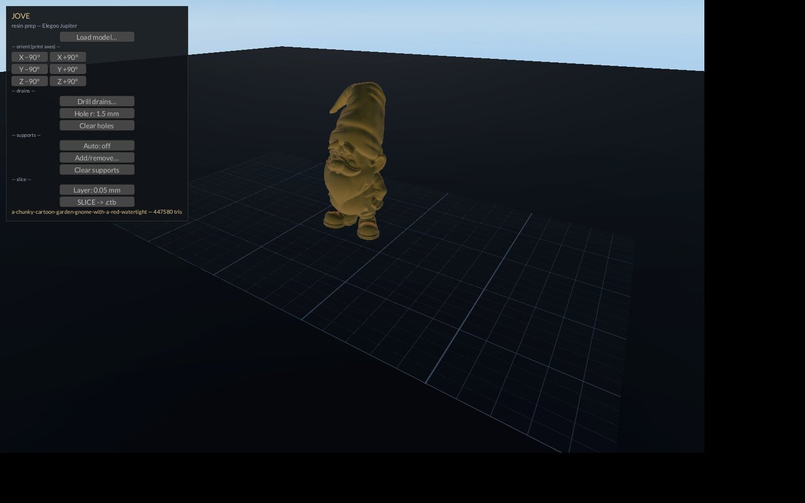

GILGAMESH
Gilgamesh: the hero-king of Uruk who went looking for what lasts. GilgaMESH makes lasting solids out of fleeting pictures — and the MESH pun carries the module.
Image to mesh. A photo becomes a printable solid.

GilgaMESH — Operator Manual
Image-to-mesh lane of the Livyatan Design Suite. Sovereign,
local-first. PolyForm Small Business licensed
(LICENSE.md).
Quickstart
trellis-make photo.png # image -> printable STL
trellis-make "a garden gnome" 120 # words -> image -> STL, 120 mm tallEither way you end with a watertight STL in
~/Desktop/bezier/ ready for the slicer. That's the whole
interface — one command, one or two args.
What it is
A picture — or plain words — becomes a printable solid. The TRELLIS server on the GPU host reconstructs a textured GLB from the image, a converter scales it to your height in mm, and Blender voxel-remeshes it watertight. Photo in, solid out.
Features
- The chain: [FLUX paints, words-mode only] ->
trellis-server (Vulkan trellis.cpp on the GPU host, :8080) ->
textured GLB ->
trellis_to_stl.pyscales to height -> Blender voxel remesh -> watertight STL. - Words mode: no file at arg 1 means it's a prompt; FLUX paints a single centered object on a plain background first (draft, no upscale — the mesh model resamples anyway).
- HEIGHT_MM: second arg, default 80. Sets the tallest dimension of the final STL.
- TRELLIS_HOST: env var — your GPU host. Point it wherever the server moves.
- Output:
NAME.glb(textured mesh),NAME.stl(raw at height),NAME-watertight.stl(sliceable) — all in~/Desktop/bezier/. - Fail-loud:
curl -sf(fixed 2026-08-15) — a server error stops the run naming the step; nothing is deleted on failure. No silent 500 written out as a .glb ever again. - Lease-safe: the GPU job runs under
flock /tmp/xos_gpu_lock.json— the Styx lease — so it waits its turn instead of colliding with the resident model. Nemotron stays resident throughout.
Using it
trellis-make ~/Pictures/bracket.png # photo of a thing, 80 mm
trellis-make part-sketch.jpg 45 # 45 mm tall
trellis-make "a socket organizer tray" 60 # no such file -> it's a prompt
TRELLIS_HOST=10.0.0.3 trellis-make x.png # different GPU hostBest input: one object, centered, plain background, decent light. The
words path builds that framing into the prompt automatically. Watch the
step tags ([flux], [trellis],
[remesh]) — whichever prints last is where a failed run
died. Deployed copy is ~/bin/trellis-make; keep it in sync
with the repo copy.
How it connects
- GPU work runs on the GPU host under the Styx flock lease, beside the HADES-kept models — no collisions, no evictions.
- Downstream: the watertight STL feeds Jove (resin prep) and Hephaestus (CAM); the GLB views in Labyrinth.
- Words mode shares Phantasos's FLUX model stack — one paint pipeline, two consumers.
Known limits
- trellis-server must be up on the GPU host (:8080). Down server =
loud stop at the
[trellis]step. - Reconstruction is minutes, not seconds. The 40-minute curl timeout is headroom, not a promise.
- Quality tracks the input photo: cluttered background, off-center subject, or bad light come back as mush. Fix the picture, not the mesh.
Queued
- Deeper suite integration (Nazca/Structor hand-offs).
- The trellis-server unit is not always-on yet — it may need starting on the GPU host before a run.